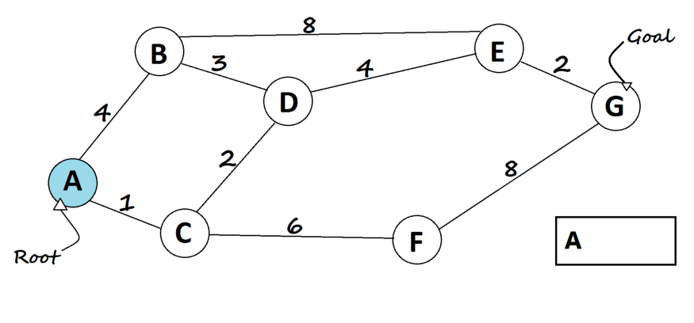

It is a greedy algorithm that solves the single-source shortest path problem for a directed graph G = (V, E)
with nonnegative edge weights, i.e., w (u, v) ≥ 0 for each edge (u, v) ∈ E.
Dijkstra's Algorithm maintains a set S of vertices whose final shortest - path weights from the source s have
already been determined. That's for all vertices v ∈ S; we have d [v] = δ (s, v). The algorithm repeatedly
selects the vertex u ∈ V - S with the minimum shortest - path estimate, insert u into S and relaxes all
edges leaving u.
Because it always chooses the "lightest" or "closest" vertex in V - S to insert into set S, it is called as
the greedy strategy.
Algorithm
Step 1: 1) Create a set sptSet (shortest path tree set) that keeps track of vertices included
in shortest path tree, i.e., whose minimum distance from source is calculated and finalized.
Initially, this set is empty.
Step 2: Assign a distance value to all vertices in the input graph. Initialize all distance
values as INFINITE. Assign distance value as 0 for the source vertex so that it is picked first.
Step 3: While sptSet doesn’t include all vertices
Pick a vertex u which is not there in sptSet and has minimum distance value.
Include u to sptSet.
Update distance value of all adjacent vertices of u. To update the distance values, iterate
through all adjacent vertices. For every adjacent vertex v, if sum of distance value of u
(from source) and weight of edge u-v, is less than the distance value of v, then update the
distance value of v.
A* is a combination of Dijkstra and Greedy. It uses distance from the root node plus heuristics distance
to the goal. The algorithm terminates when we find the goal node.Dijkstra’s algorithm tries to find the
shortest path from the starting(root) node to every node, hence we can get the shortest path from the
starting node to the goal.

Assign dis[v] for all nodes = INT_MAX (distance from root node to every other node)
Assign dis[root] = 0(distance from root node to itself).
Add all nodes to a priority queue.
Loop on the queue as long as it's not empty.
In every loop, choose the node with the minimum distance from the root node in the
queue(root node will be selected first).
Remove the current chosen node from the queue (vis[current] = true)
If the current node is the goal node, then return it.
For every child of the current node, do the following:
If child node is not already in the queue (already visited), then skip this
iteration.
Assign temp = dist[current] + distance from current to child node.
If temp < dist[child], then, assign dist[child]=temp. This denotes a shorter
path to child node has been found.